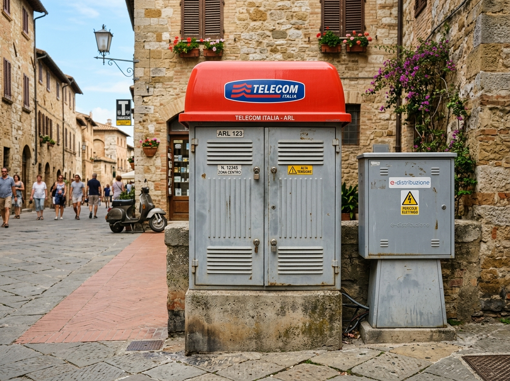

...

L'inconfondibile armadio con tettuccio rosso scanalato che smista i doppini in rame verso le chiostrine e le abitazioni.
Carrozzeria metallica grigia con serratura centrale a chiave triangolare, tettuccio rosso impermeabile curvo e quasi sempre affiancato da colonnina e-distribuzione grigia.
Durante la transizione alla fibra, l'ARLO ottico viene posato a pochi centimetri dall'ARL rame o collegato tramite un cunicolo di scambio per sfruttare le stesse canaline storiche.